SPECTROview User Manual

Last updated: May 2026
Table of Contents¶
- Introduction
- Installation
- Supported Data Formats
- User Interface Overview
- Spectra and Maps Workspaces
- 5.1 SpectraList & MapList
- 5.2 Spectra Viewer
- 5.3 Fit Model Builder
- 5.4 Collect & Save Fit Results
- 5.5 More Tab
- Graphs Workspace
- Tensor Fit Engine
- Multivariate Analysis (MVA)
- Quick Calculators
- Settings & Preferences
- Save & Load Workspace
- Keyboard Shortcuts & Tips
1. Introduction¶
Spectroscopy techniques (such as Raman, Photoluminescence, XRD, XPS, etc.) are widely used in various fields, including materials science, chemistry, biology, and geology. In recent years, these techniques have increasingly found their place in cleanroom environments, particularly within the microelectronics industry, where they serve as critical metrology tools for wafer-scale measurements.
The data collected from these in-line measurements (wafer data) require specific processing, but existing software solutions are often not optimized for this type of data and typically lack advanced plotting and visualization capabilities. Additionally, the licensing requirements of these software solutions can restrict access for a broader community of users.
SPECTROview addresses these gaps by offering free, open-source software that is compatible with both in-line data (wafer maps) as well as standard spectroscopic data (discrete spectra, 2D maps). It also features a built-in visualization tool, enabling users to streamline both data processing and visualization in a single application, making the workflow more efficient.
GitHub Repository: https://github.com/CEA-MetroCarac/SPECTROview
Citation: Don't forget to cite the tool when it is used for your data processing, data visualization on your publication: Le, V.-H., & Quéméré, P. (2025). SPECTROview: A Tool for Spectroscopic Data Processing and Visualization. Zenodo. https://doi.org/10.5281/zenodo.14147172
Highlighted features: - Cross-platform compatibility (Windows, macOS, Linux). - Supports processing of spectral data (1D) and hyperspectral data (2D maps or wafer maps). - Ability to fit multiple spectra or 2D maps using predefined custom fit models. - Collect all best-fit results with one click. - Optimized user interface for easy and quick inspection and comparison of spectra. - Dedicated module for effortless, fast, and easy data visualization.
2. Installation¶
Ensure that Python (version between v3.8 and v3.12) is already installed on your PC. The installation of SPECTROview can be performed via the command line (CMD).
From PyPI (recommended)¶
From GitHub (latest development version)¶
Launch & Update¶
To open SPECTROview, type in CMD:
To update to the newest version: Or update to a specific version (example:26.6.1):
3. Supported Data Formats¶
Examples of all supported data types can be found in the /examples folder within the GitHub repository. Users can download these files to understand the supported file formats, data structures, and practice using the SPECTROview application with real examples.
3.1 .wdf (Renishaw) and .spc (HORIBA) Formats¶
Since version 26.7.1, SPECTROview natively supports:
- .wdf — Recorded with WiRE software from Renishaw instruments
- .spc — Recorded with LabSpec 6 software from HORIBA instruments
Both discrete spectra and hyperspectral datasets (2D maps) are fully supported. These files can be opened directly without any prior conversion. In addition to spectroscopic data, SPECTROview also reads and imports the associated metadata, including: excitation wavelength (nm), gratings (gr/mm), objective used, laser power, slit/hole, acquisition timestamp, etc. This ensures full access to both measurement data and experimental conditions within a single workflow.
3.2 Spectroscopic Data (.txt, .csv)¶
SPECTROview supports spectroscopic data in TXT or CSV format. Files must consist of two columns separated by semicolons, spaces, or tabs. Files can contain column headers or not: - Column 1: X-axis values (e.g., Raman shift in cm⁻¹, wavelength in nm) - Column 2: Corresponding intensity values (a.u.)
3.3 Hyperspectral Data (.txt, .csv)¶
SPECTROview supports hyperspectral data (2D maps or wafer maps) in TXT or CSV format, with the data structure arranged as follows:
| R1 | R2 | R3 | ... | Rn | ||
|---|---|---|---|---|---|---|
| X1 | Y1 | I1 | I1 | I1 | ... | I1 |
| X2 | Y2 | I2 | I2 | I2 | ... | I2 |
| ... | ... | ... | ... | ... | ... | ... |
| Xn | Yn | In | In | In | ... | In |
- The first row (R1 → Rn) is the X-axis values (e.g., Raman shift in cm⁻¹) of all spectra.
- The first two columns list the X and Y coordinates of the spectrum within the map.
- The remaining columns contain the corresponding intensity values for each spectrum (I1 → In), from the second row to the last.
Note: 2D map formats from Renishaw tools must be converted before they can be used in SPECTROview. An integrated conversion tool is provided in the SPECTROview application for this purpose (see Section 4, File Convert Tool).
3.4 Datasheet (Excel or CSV)¶
Excel files (.xlsx, .xls) containing one or multiple sheets, or CSV files can be directly loaded into the Graphs Workspace for visualization.
3.5 Formats saved by SPECTROview¶
Depending on the active workspace, SPECTROview saves files with specific extensions so work can be resumed later:
- Maps workspace → .maps
- Spectra workspace → .spectra
- Graphs workspace → .graphs
4. User Interface Overview¶
The SPECTROview application is designed for the efficient processing of spectroscopic data and the easy visualization of fitted results. The interface features three main workspaces, each developed for a specific purpose:
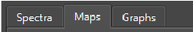
- Spectra: For processing one or multiple discrete spectra.
- Maps: For processing one or multiple hyperspectral datasets, including wafer data and 2D maps.
- Graphs: For plotting and visualizing data.
Tooltip: Most GUI elements in SPECTROview (buttons, text boxes, dropdowns, etc.) feature tooltips. Hover the mouse cursor over an element for 1 second to see a brief explanation of its function.
Toolbar¶
A horizontal toolbar is located at the top edge of the application containing the following buttons:
| Button | Function | Image |
|---|---|---|
| Open: Loads all supported data types. The application will automatically switch to the appropriate workspace based on the loaded file type. | ||
Save: Saves the current active workspace to a file (.maps, .spectra, or .graphs), allowing the user to reopen it later and resume work. |
||
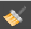 |
Clear: Clears the current active workspace to start a new session. All loaded data will be removed. | |
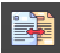 |
File Convert Tool: Opens the tool to convert hyperspectral data (2D maps) from the Renishaw WiRE format into a format supported by SPECTROview. | 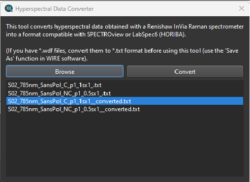 Figure 1: Interface of "Hyperspectral Data Converter". Load file(s) → Click "Convert" → New file created with _converted suffix. |
| Settings: Opens the Settings Panel to adjust fitting parameters and define the storage folder for user-defined fitting models. | 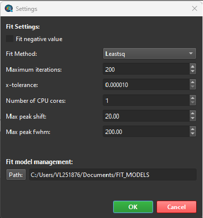 Figure 2: Setting Panel |
|
| Theme Toggle: Switches the application GUI between Dark and Light modes. | ||
| User Manual: Opens this User Manual document. | ||
| About: Displays version information and details about the application. |
5. Spectra and Maps Workspaces¶
The Maps and Spectra workspaces are very similar. They share many common features, with the Maps workspace containing additional specific features designed to handle multiple hyperspectral datasets.
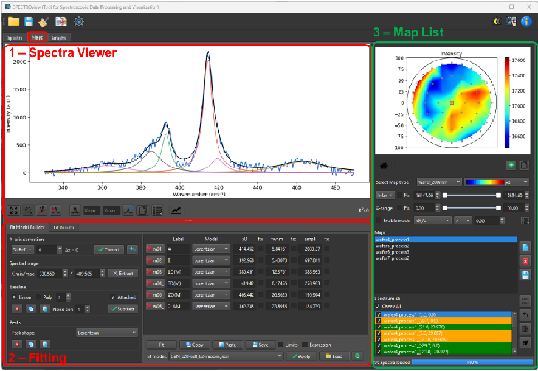
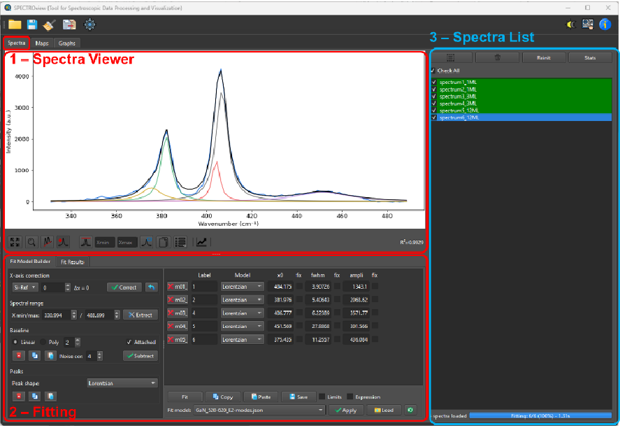
Figure 3: Interface overview of Spectra (left) and Maps (right) workspaces. The interface is divided into three main sections. Section 1 (SpectraViewer) and 2 (FitModelBuilder) are identical in both workspaces, whereas section 3 (SpectraList / MapList) differs slightly.5.1 SpectraList & MapList¶
These sections are designed to efficiently navigate between spectral or hyperspectral data.
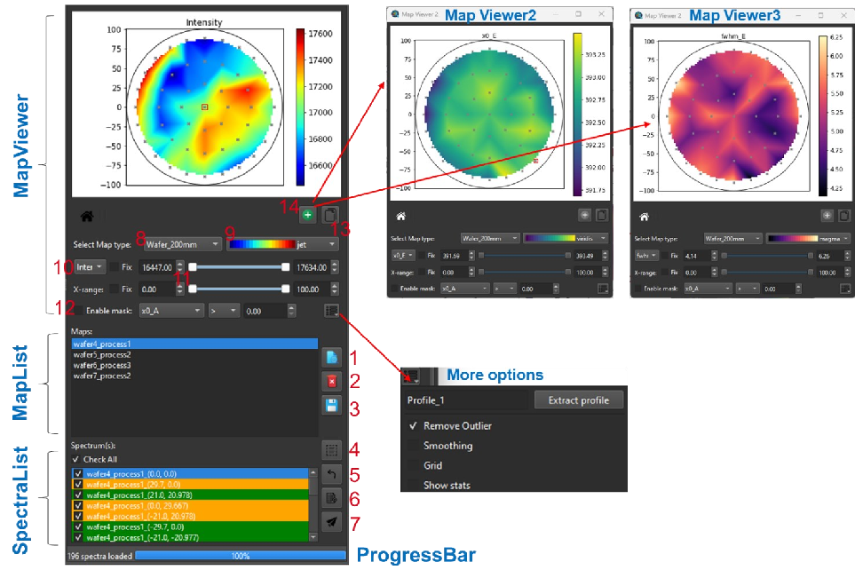
Figure 4: (Left) MapList section within the Maps workspace. On the right: MapViewer module and More Options to adjust the heatmap display.MapList: Displays all loaded map files, including wafer maps and 2D map types. Three buttons located on the right side allow the user to (1) view the selected map data, (2) delete the selected map, or (3) save the selected map to an Excel file.
SpectraList: Displays all loaded spectra in the Spectra workspace, or all spectra associated with the selected map in the Maps workspace. Users can select one or multiple spectra simultaneously. The selected spectra are displayed in the SpectraViewer. Buttons allow the user to select all available spectra, reset the selection, display the fit statistic report, or send selected spectra to the Spectra workspace.
MapViewer: Displays the heatmap of the selected map. Several options are available to customize the heatmap: - Map type: 2D map or wafer map with different diameters. - Color palette: Selection for the heatmap. - Displayed parameter: Maximum intensity, area, or any fitted parameter. - Range sliders: Adjust the X-axis range and the color bar limits. - Mask feature: Define specific regions of the heatmap based on user-defined filters. - Copy button: Copies the heatmap to the clipboard. - Multiple MapViewers: Add additional MapViewer windows as floating windows for comparison.
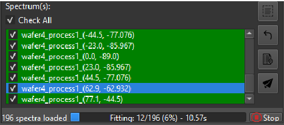
Figure 5: SpectraList and ProgressBar. Displays fitting progress (% and elapsed time). The Stop button halts fitting.5.2 Spectra Viewer¶
The SpectraViewer plots all spectra (and best-fit curves) selected via the SpectraList.
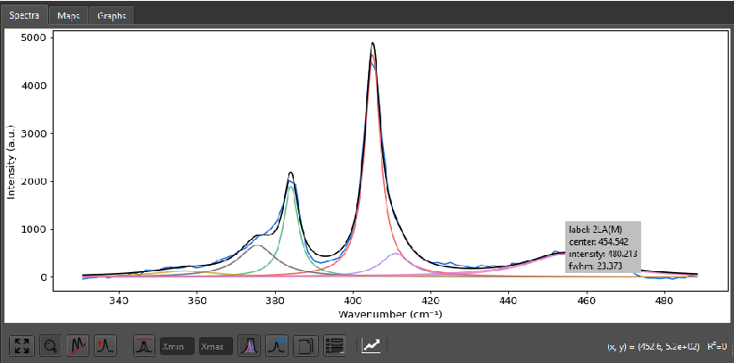
Figure 6: Spectra Viewer (left) widget and View Options Menu (right).Toolbar Buttons & View Options¶
| Button | Function |
|---|---|
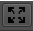 |
Rescale: To rescale the spectra plot. Shortcut: Ctrl + R |
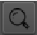 |
Zoom: When active, enables the "zoom" feature using left mouse click & drag. |
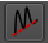 |
Baseline: When active, allows the user to define baseline point(s) using left mouse click. |
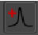 |
Peaks: When active, allows the user to define peak(s) on the spectra using left mouse click. |
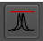 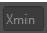 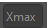 |
Normalization: Displays selected spectra normalized to the maximum peak intensity. Type into 'min' and 'max' to normalize to a specific spectral range. 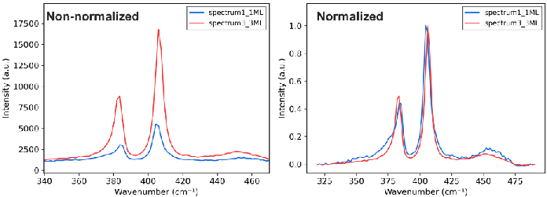 Figure 7: Raw spectra (left) vs. normalized spectra (right) to inspect peak shifts. |
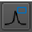 |
Legend: Displays legend for selected spectra. Click on legend box to change color/labels (Zoom must be disabled). 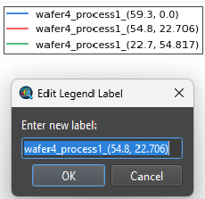 |
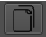 |
Copy: Copies the plot to the clipboard as an image. Ctrl + Click (or Cmd + click on macOS): Copies numerical data to the clipboard. |
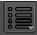 |
More options: Opens view options (X/Y units, Log scale, Plot style, Raw/Residual visibility, Grids, Line width, Figure size). 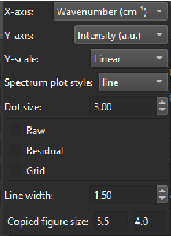 |
Mouse Interactions¶
- Show Peak Parameters: Hover over a peak to display a pop-up with its parameters.
- Add/Remove Peaks: Right-click to remove the current peak, or left-click to add a new peak (Peak button must be active).
- Adjust peak: Drag the peak with the mouse.
- Quick rescale Y-axis: Use the mouse wheel.
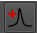
5.3 Fit Model Builder¶
The FitModelBuilder Tab contains three main panels: Fitting, PeakTable, and FitModelControl.
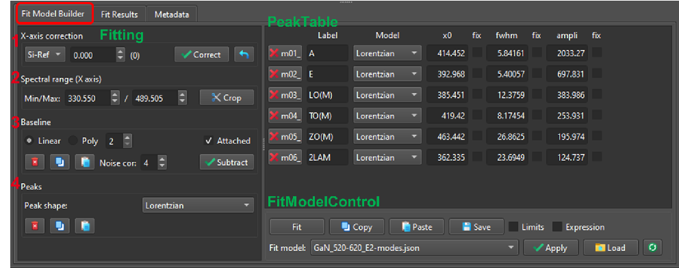
Figure 8: FitModelBuilder tab widget containing: (1) Fitting, (2) PeakTable and (3) FitModelControl.5.3.1 Fitting Panel¶
The FittingPanel is divided into four sections:
Step 1: X-axis Correction (optional) Perform an X-axis correction based on measurements from a well-known reference sample (e.g., Silicon at 520.7 cm⁻¹). Fit the reference, enter the measured position, and apply the correction to shift the X-axis accordingly.
Step 2: Define the fitting range Define the X-axis range used for the fitting process.
Step 3: Baseline definition Two baseline modes (Manual or Auto) can be chosen:
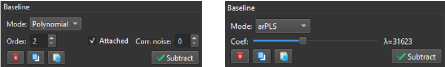
Figure 9: Baseline mode selection: Manual (left) vs. Auto (right)- Manual mode (Linear or Polynomial): Define baseline anchor points by clicking in the SpectraViewer. Check Attached to snap points to the curve. Check Correct noise to calculate points as an average of neighboring data.
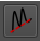
- Auto mode (airPLS or asLS): Baseline curve is automatically defined. Adjust the slider to fine-tune.
- airPLS: Aggressive, great for high-fluorescence. Validated for Raman data.
- asLS: Stable but doesn't distinguish noise/peaks well. Best for clean spectra.
Step 4: Peak definition - Add peaks directly in the SpectraViewer by left-clicking (Peak button enabled). Adjust interactively by dragging. - Added peaks are listed in the PeakTable. - Supported shapes: Lorentzian, Gaussian, PseudoVoigt, LorentzianAsym, GaussianAsym, Fano, DecaySingleExp, DecayBiExp.
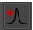
5.3.2 PeakTable Panel¶
Displays all peaks defined for the selected spectrum. Peak properties are dynamically updated.
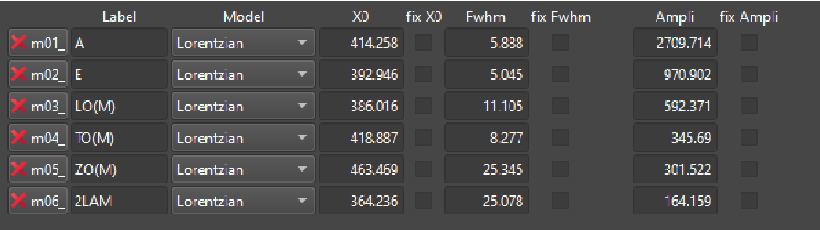
Figure 10: PeakTable panelConstraints: - Fix: Keeps the parameter value constant. - Limits: Displays min/max columns to restrict parameter variations. - Expression: Links parameters via mathematical expressions.
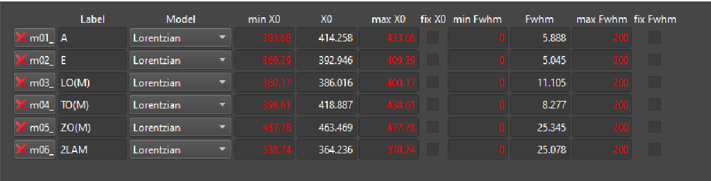
Example 1: Constrainm02_x0 to be m01_x0 - 17.
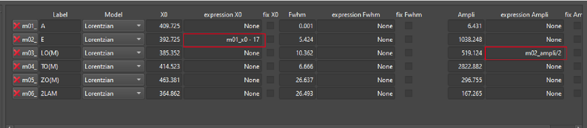
Example 2: Constrainm03_ampli to be m02_ampli / 2.
5.3.3 FitModelControl Panel¶
Click the Fit button to start the fitting process.
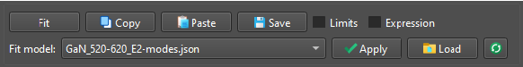
Figure 11: Interface of FitModelControlCopy / Paste Fit Models: The entire fit model can be copied and pasted between spectra.
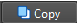
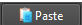
Saving / Loading Fit Models: Save the fit model for later use. Stored models can be accessed using the dropdown menu.
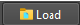
5.4 Collect & Save Fit Results¶
To collect best-fit results from all fitted spectra/maps: - Switch to the Fit Results tab. - Click the Collect button. Results are aggregated into a table.
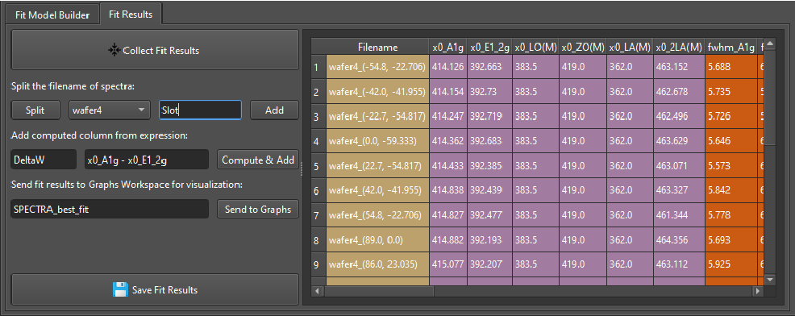
Figure 12: Collect_fit_results panel5.4.1 Splitting Filename Features¶
Extracts metadata from filenames separated by underscores (e.g., Sample1_ProcessA_Temp25) and adds them as new columns.
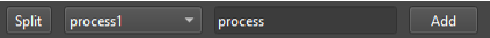
5.4.2 Compute and Add New Columns¶
Create new columns via mathematical expressions using existing columns (e.g., x0_p1 - x0_p2).
Supported operations: +, -, *, /, **, %, ().
Important: For column names with special characters, wrap them in backticks (
). Example: ``x0_LO(M)` ``
5.4.3 Saving or Visualizing¶
Name the best-fit dataset and send it to the Graphs workspace for plotting, or export as Excel.
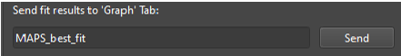
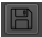
5.5 More Tab¶
Contains three sections:
- Left: Metadata showing settings/parameters of loaded .wdf or .spc files.
- Middle: Information about the selected spectrum.
- Right: Additional processing features (intensity normalization, cosmic ray detection).
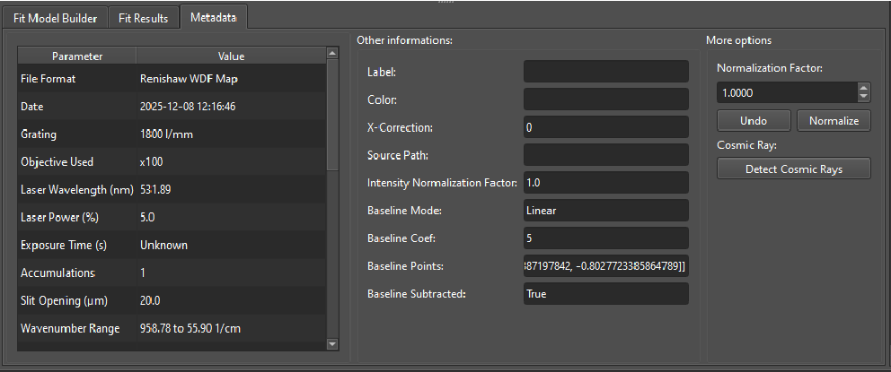
Figure 13: More Tab’s user interface.6. Graphs Workspace¶
The Graphs Workspace is dedicated to data visualization, with an emphasis on simplicity and speed.
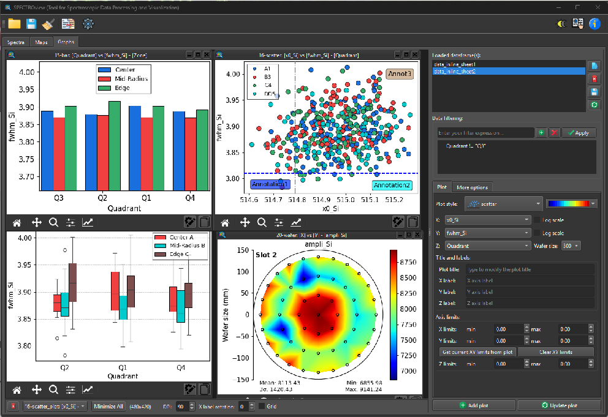
Figure 14: Graphs Workspace’s interface. Control Panel on the right, Graph Viewer on the left.6.1 Loading Data¶
Datasets can be sent directly from other workspaces or loaded from Excel/CSV files. All loaded datasets are displayed in a list widget. Buttons available: View, Delete, Save, Refresh (reloads CSV/Excel file if modified externally).
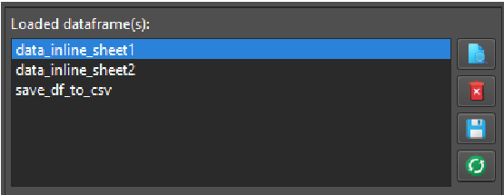
Figure 15: List of loaded dataframe(s).6.2 Add a New Plot¶
- Select dataset.
- Select X, Y, Z columns from the dropdown menus.
- Select plot style (scatter, point, bar, box, line, 2Dmap, wafer).
- Specify labels, limits, and wafer size (if applicable).
- Click Add plot.
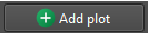
6.3 Modify Existing Plot¶
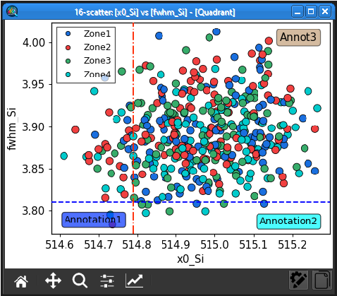
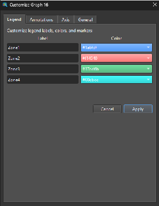
Figure 16: Example of a plot widget. Click "Customize" to open the Customize Dialog.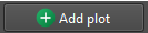
- Click Customize to open the Customize Dialog (Legend, Annotation, Axis, General).
- Double-click the legend box or annotation to edit its content directly.
-
Adjust settings via the right ControlPanel and click Update.
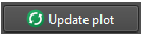
-
Click Copy to copy the figure to the clipboard.
6.4 Data Filtering¶
Filter rows using a boolean expression in the Filter field: (column_name) (operator) (value)
String values must be enclosed in double quotes. Column headers with spaces must be enclosed in backticks (`).
 Figure 17: Example of using filters.
Figure 17: Example of using filters.
| Filter Expression | Meaning |
|---|---|
Confocal != "high" |
Values in "Confocal" not equal to "high" |
Thickness == "1ML" or Thickness == "3ML" |
"Thickness" equals 1ML or 3ML |
`Laser Power` <= 5 |
"Laser Power" is less than or equal to 5 |
6.5 Annotation Features¶
Customize annotations (lines and text) in the MoreOptions tab or by clicking directly on the plot.
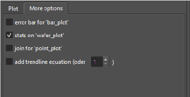
Figure 18: MoreOptions Panel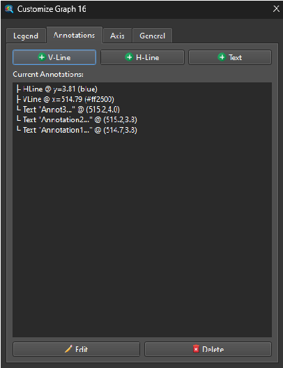
Figure 19: Annotation (line & text) Customization Panel.7. Tensor Fit Engine¶
What is it?¶
The Tensor Fit Engine is SPECTROview's high-performance fitting backend. Instead of fitting spectra one at a time, it fits all spectra simultaneously using batched matrix operations.
Why is it faster?¶
- Fits all N spectra at once (Batched tensor math).
- Uses Analytical Jacobians instead of slow Numerical Jacobians.
- Vectorized NumPy/LAPACK operations eliminate Python function call overhead. Result: Typically 10–15× faster. A 1000-spectrum map that would take 30+ seconds now fits in < 3 seconds.
Tuning for Performance vs. Accuracy¶
Access fitting parameters in Settings → Fit Parameters:
| Setting | Default | Fast Preview | Precision Fitting |
|---|---|---|---|
xtol / ftol |
1e-4 | 1e-2 | 1e-6 |
max_ite |
200 | 50 | 500 |
8. Multivariate Analysis (MVA)¶
Built-in MVA tools are accessible from the MVA tab in Spectra and Maps workspaces. Requires at least 2 active spectra.
Supported Methods¶
- Principal Component Analysis (PCA): Reduces spectral data dimensions to reveal main patterns of variance. Visualizations: Scree plot, Loadings, Scores.
- Non-negative Matrix Factorization (NMF): Decomposes data into additive, non-negative components (endmembers). Visualizations: Loadings, Scores.
9. Quick Calculators¶
Accessible from the Quick Calc button in the toolbar, or Tools → Quick Calculators.
9.1 Laser Spot Size Calculator¶
Calculates diffraction-limited spot size, depth of focus, and power density.
- Spot Size: 1.22 × λ / NA (μm)
- Depth of Focus: 4 × n × λ / NA² (μm)
9.2 Penetration Depth Calculator¶
Calculates optical penetration depth from the extinction coefficient.
- Penetration Depth d: λ / (4πk) (nm)
9.3 Unit Converter¶
Converts between spectroscopic units (e.g., nm to eV, nm to cm⁻¹, Raman shift).
10. Settings & Preferences¶
Access via the Settings button in the toolbar. - Theme: Dark / Light mode. - Default Directory: Default folder for file dialogs. - Fit Parameters: xtol, ftol, max_ite, coef_noise. - Fit Model Path: Default folder for saved fit models. - Peak Limits: Minimum FWHM, maximum FWHM, maximum shift.
11. Save & Load Workspace¶
Saving¶
Click the Save button in the toolbar to save the current workspace:
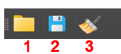
| Workspace | Extension | Contents |
|---|---|---|
| Spectra | .spectra |
Loaded spectra, fit models, baseline settings, results |
| Maps | .maps |
Map data, all spectra with fit results, metadata |
| Graphs | .graphs |
All datasets and plot configurations |
Loading¶
Click the Open button and select a .spectra, .maps, or .graphs file. SPECTROview will automatically restore all data in the correct tab.
12. Keyboard Shortcuts & Tips¶
Global Shortcuts¶
| Shortcut | Action |
|---|---|
Ctrl + R |
Rescale spectra plot |
Ctrl + Click on Copy |
Copy numerical data to clipboard |
Mouse wheel |
Quick Y-axis rescale in Spectra Viewer |
Tips¶
- Tooltips everywhere: Hover over any GUI element for 1 second.
- Drag peaks: Click and drag peaks directly in the Spectra Viewer.
- Quick re-fit: After adjusting parameters, click Fit again — it warm-starts from previous results.
- Column names with spaces: Use backticks (
`) in Filters or Computed Columns. - Profile extraction: In Maps workspace, select exactly 2 points to extract an intensity profile.